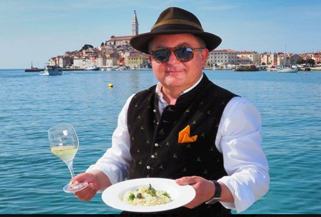
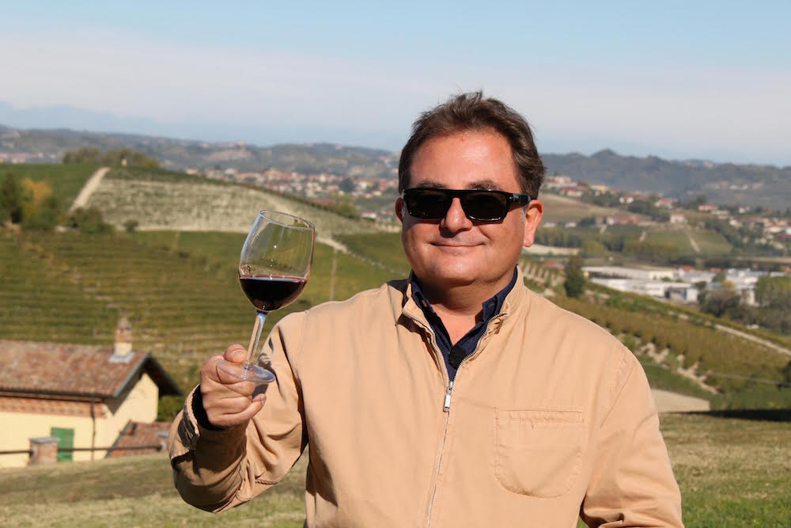
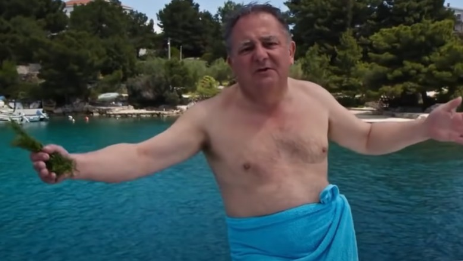

powrót do strony głownej
CYTAT ROBERTA MAKŁOWICZA
"Głęboko nudzi mnie używanie wagi w kuchni. Jeśli słyszę, że prawdziwy polski katolik w Wigilię powinien się powstrzymać od spożywania napojów alkoholowych, to uważam to za neopogaństwo. Bo narodziny Pana Jezusa to dla chrześcijanina jedno z najbardziej doniosłych świąt, najlepszy moment, żeby właśnie napić się wina..."
- R. Makłowicz
MĄDRE SŁOWA ROBERTA MAKŁOWICZA
By zobaczyć własne odbicie w innym lustrze.To konieczne, gdyż lustra potrafią kłamać,
więc jeśli całe życie przeglądasz się w jednym,
możesz do końca nie wiedzieć, jak naprawdę wyglądasz.
- Robert Makłowicz

Propaganda - wiersz
(ang. Propaganda?; tłum. Filip Turno)
Każdy rząd stosuje propagandę,
tylko wszystko zależy od tego, jak ona ma wyglądać.
Ta wygląda jak disco polo.
Jest tępa i okropna, smakuje przaśnie,
jak niedobre ogórki z ciepłą wódką. .
Each one rules propaganda, it just all depends on how she uses the propaganda.
This one looks like a disco polo. It is dull and horrible,
it tastes like bad cucumbers in the mouth of vodka.
- Robert Makłowicz

Jedzenie w polskich kolejach żelaznych jest rzeczą rónie ryzykowną jak chodzenie po torach lub regulowaniu zegarka wedle przyjazdow składu relacji Przemyśl - Szczecin. .
- Robert Makłowicz

Dzień był ponury jak myśli taliba.
- Robert Makłowicz
